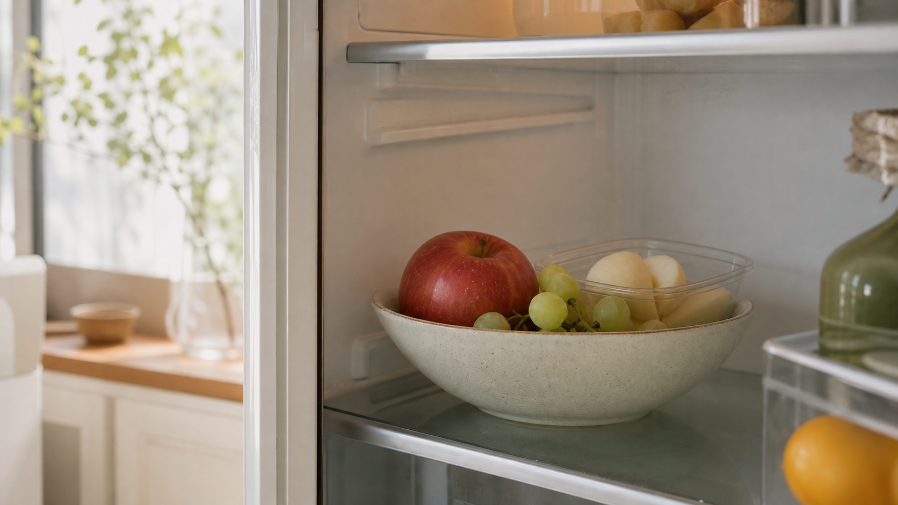

TSTC LAB 쨌 2026.05.28
???대뼡 怨쇱씪? ?④꺼吏덇퉴?
?⑤뒗 怨쇱씪? 留쏆쓽 ?ㅽ뙣留뚯씠 ?꾨땲?? 癒밸뒗 ?щ엺??媛먭컖怨??곹솴??留욎? ?딆? 寃곌낵?????덉뒿?덈떎.

?됱옣怨좎뿉 怨쇱씪???⑥븘 ?덉쓣 ???곕━??蹂댄넻 ?대젃寃?留먰빀?덈떎. ?쒕쭧???놁뿀??蹂대떎.???섏?留??ㅼ젣濡쒕뒗 議곌툑 ?ㅻ? ?뚭? 留롮뒿?덈떎. 留쏆? 愿쒖갖?섎뒗???먯씠 媛吏 ?딆븯怨? 醫뗭븘 蹂댁??붾뜲 ?앷퉴吏 癒뱀? 紐삵뻽怨? ?좊Ъ諛쏆븯吏留?媛議?以??꾧뎄??癒쇱? 爰쇰궡吏 ?딆? 怨쇱씪???덉뒿?덈떎.
??쒓낵?쇳삊?뚭? TSTC瑜??댁빞湲고븯???댁쑀???ш린?먯꽌 ?쒖옉?⑸땲?? ?щ엺? 怨쇱씪???⑤쭧 ?섎굹濡?湲곗뼲?섏? ?딆뒿?덈떎. ?μ씠 媛뺥빐??硫덉텛湲곕룄 ?섍퀬, ?앷컧??臾쇰윭???먯씠 ??媛湲곕룄 ?섍퀬, ?됱씠 醫뗭븘 蹂댁뿬 ?吏留?留됱긽 癒뱀쓣 ?곹솴怨?留욎? ?딆븘 ?④린湲곕룄 ?⑸땲??
怨쇱씪???⑤뒗?ㅻ뒗 寃껋? 踰꾨쫯??臾몄젣媛 ?꾨땲?? 媛먭컖怨??앺솢??留욎? ?딆븯?ㅻ뒗 ?좏샇?????덉뒿?덈떎.
?꾩씠媛 ?뱀젙 怨쇱씪???レ뼱?섎뒗 ?댁쑀???⑥닚?섏? ?딆뒿?덈떎. ?⑤쭧??遺議깊빐?쒓? ?꾨땲??猿띿쭏??吏덇컧, ?낆븞?먯꽌 ?쇱????? ?뱀쓣 ?뚯쓽 ???컧 ?뚮Ц?????덉뒿?덈떎. ?대Ⅸ?먭쾶??鍮꾩듂???쇱씠 ?쇱뼱?⑸땲?? ?대뼡 ?щ엺? ?꾩궘???ш낵瑜??좎꽑?섎떎怨??먮겮吏留? ?대뼡 ?щ엺? 媛숈? ?⑤떒?⑥쓣 ?쇨낀?섎떎怨??먮굧?덈떎.
TSTC??怨쇱씪????媛吏 媛먭컖 異뺤쑝濡??섎늻吏留? 紐⑹쟻? ?щ엺??遺꾨쪟?섎뒗 寃껋씠 ?꾨떃?덈떎. ???먯씠 媛怨????⑤뒗吏瑜?????蹂닿린 ?꾪븳 ?몄뼱瑜?留뚮뱶???쇱엯?덈떎.
洹몃옒??怨쇱씪肄붾뵒?ㅼ씠?곗쓽 ??븷? ?쒖씠 怨쇱씪??醫뗭뒿?덈떎?앸씪怨?留먰븯???곗꽌 ?앸굹吏 ?딆뒿?덈떎. ?꾧뎄?먭쾶, ?몄젣, ?대뼡 ?곹깭濡? ?대뼡 ?묒쓣 沅뚰빐???앷퉴吏 醫뗭? 寃쏀뿕???섎뒗吏 臾삳뒗 ?щ엺??媛源앹뒿?덈떎. 醫뗭? 怨쇱씪怨?留욌뒗 怨쇱씪? ??媛숈? 留먯씠 ?꾨땲湲??뚮Ц?낅땲??
怨쇱씪???④린吏 ?딅뒗 泥?踰덉㎏ 諛⑸쾿? ??鍮꾩떬 怨쇱씪???щ뒗 寃껋씠 ?꾨땺 ???덉뒿?덈떎. 癒밸뒗 ?щ엺??媛먭컖??癒쇱? 蹂대뒗 寃? 洹??щ엺???쇨낀????李얜뒗 留? ?됱옣怨좊? ?댁뿀????癒쇱? ?먯씠 媛???앷컧, 媛議깆씠 ?④퍡 癒뱀쓣 ???덈뒗 ?묒쓣 蹂대뒗 寃? TSTC??洹?愿李곗쓣 議곌툑 ???좊챸?섍쾶 留뚮뱾湲??꾪븳 ?쒖뒪?쒖엯?덈떎.